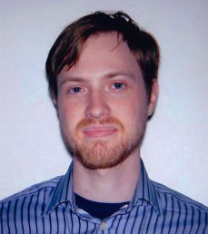
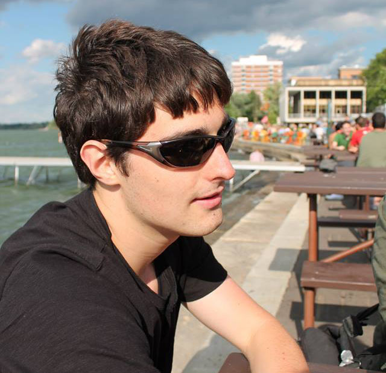
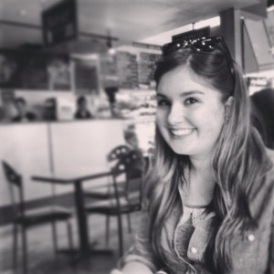
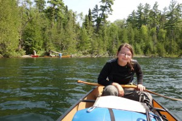
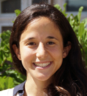

ABOUT US
STUDENTS
 Evan Applegate, Project AssistantEvan is the Cartography Lab Project Assistance and a master's student in Cartography/GIS. A recent New York transplant, he's all about remote sensing, editorial cartography, and arcane PDFS.
 Sarah Bennett, Cartographer
Sarah Bennett, CartographerSarah Bennett is working on her PhD in Geography. She is visualizing how relationships play out in gestures, especially between people and animals. She is interested in mapping movement and in the cultural and environmental implications of maps. She loves to dance.
 Daniel Huffman, Honorary Fellow
Daniel Huffman, Honorary FellowDaniel Huffman makes, and sometimes writes about, maps. He is concerned with cartographic aesthetics, and how to promote maps as artistic objects that function through their beauty as much as their data.
 Jon Koser, CartographerJon is an undergraduate in his senior year studying Human Geography and Cartography/GIS. He is fascinated by history and culture and so loves to create maps which incorporate these things. He is also a fan of interactive web cartography and programming. In his free time he tends to be outside or doing something musical.
 Katie Kowalsky, CartographerKatie is a Cartography/GIS and Computer Sciences undergraduate who is obsessed with web development, programming, and Beyonce. While not working on maps for class, she also works on projects in the lab and explores interactive mapping techniques.
Dylan Moriarty, CartographerDylan is a Cartography/GIS certificate student in the day, and spent the majority of his evenings working as a graphics editor at The Daily Cardinal. He now makes maps in the lab, but hopes to return to the daily grind of press graphics following graduation.
 Caroline Rose, CartographerCaroline is pursuing a master's degree at the University of Wisconsin- Madison in cartography and geographic information systems. She's a cartographer and an outdoor enthusiast, drawing inspiration from the natural landscapes that she explores by boat, by parachute, or on foot. Her current research explores how GIS and other geospatial technology is used in wilderness search and rescue.
 Carl Sack, Cartographer
Carl Sack, CartographerCarl Sack is an activist cartographer and Ph.D. candidate in Cart/GIS. His work and research interests are online participatory mapping, crowdsourced geographic information, user-centered design, Indigenous counter-mapping, and social and environmental activism. His projects include online wikimaps, thematic web maps, print maps, research on new web mapping techniques, and teaching. When not in the Cart Lab, he enjoys running, biking, canoeing, and exploring new places.
 Robin Tolochko, CartographerRobin is pursuing a Master's Degree in Cartography/GIS at UW-Madison. She loves maps, traveling, and building community. Check out her website or say hi on Twitter.